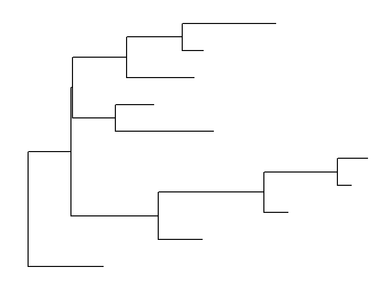
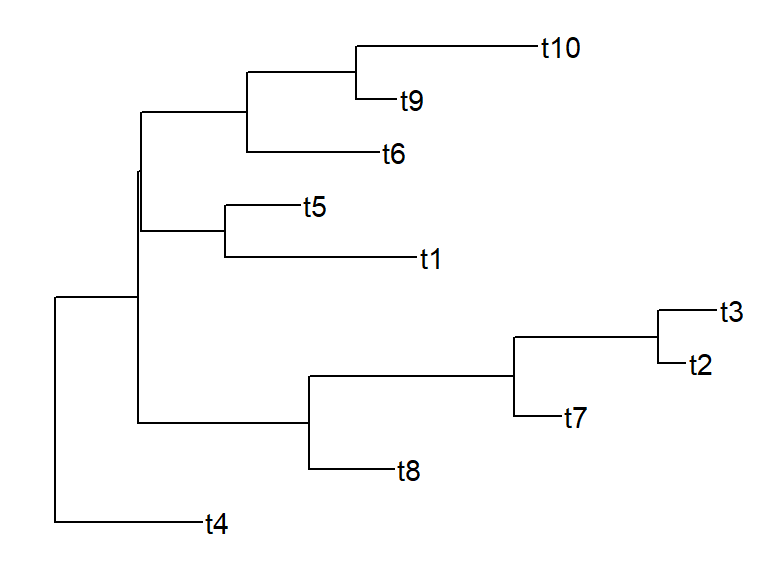
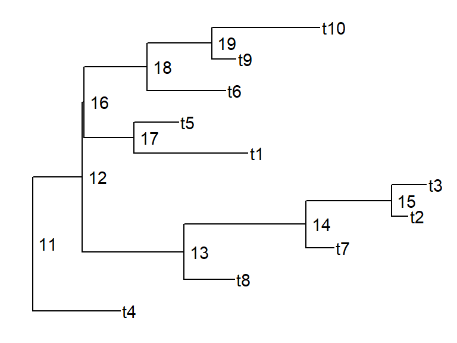
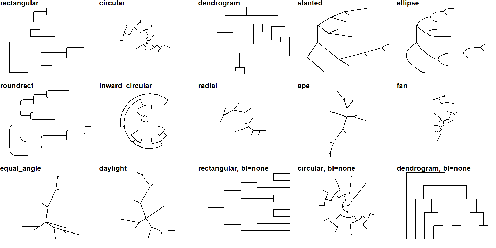
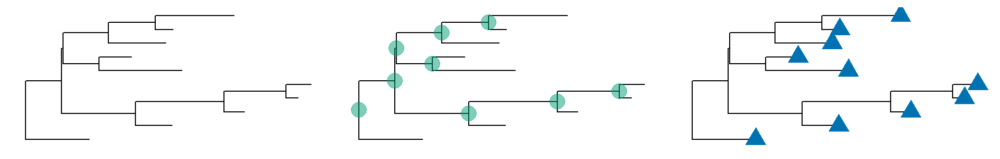
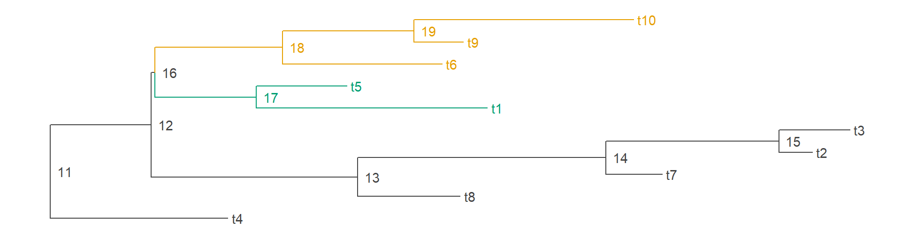

ggtreeによる系統樹の可視化
進化生物学の研究において、系統樹を扱う機会は多い。
ここでは、Rで系統樹を可視化する際に便利な ggtree の使い方を紹介する。
ape をCRANから、ggtree を bioconductor からインストールする。
plot() でも可視化はできるggtree で系統樹を可視化する基本的な使い方は ggplot() と同じで、 + を使って指示を重ねていく。
set.seed(1) # シードを設定
tr = ape::rtree(n = 10) # 系統樹を生成
ggtree::ggtree(tr) # 枝のみ描画
# geom_tiplab() + # tip(先端)のラベルを表示
# geom_nodelab(aes(label = node), hjust = -0.2, node = "internal") # 内部ノードを表示
ggtree で系統樹を可視化する基本的な使い方は ggplot() と同じで、 + を使って指示を重ねていく。
set.seed(1) # シードを設定
tr = ape::rtree(n = 10) # 系統樹を生成
ggtree::ggtree(tr) # 枝のみ描画
geom_tiplab() # tip(先端)のラベルを表示
# geom_nodelab(aes(label = node), hjust = -0.2, node = "internal") # 内部ノードを表示
ggtree で系統樹を可視化する基本的な使い方は ggplot() と同じで、 + を使って指示を重ねていく。
set.seed(1) # シードを設定
tr = ape::rtree(n = 10) # 系統樹を生成
ggtree::ggtree(tr) # 枝のみ描画
geom_tiplab() + # tip(先端)のラベルを表示
geom_nodelab(aes(label = node), hjust = -0.2, node = "internal") # 内部ノードを表示
set.seed(1) # シードを設定
tr = ape::rtree(n = 10) # 系統樹を生成
ggtree::ggtree(tr, layout = "rectangular") # デフォルト
ggtree::ggtree(tr, layout = "circular")
ggtree::ggtree(tr, layout = "dendrogram")
ggtree::ggtree(tr, layout = "slanted")
ggtree::ggtree(tr, layout = "ellipse")
ggtree::ggtree(tr, layout = "roundrect")
ggtree::ggtree(tr, layout = "inward_circular")
ggtree::ggtree(tr, layout = "radial")
ggtree::ggtree(tr, layout = "ape")
ggtree::ggtree(tr, layout = "fan", open.angle = 120)
ggtree::ggtree(tr, layout = "equal_angle")
ggtree::ggtree(tr, layout = "daylight")
ggtree::ggtree(tr, layout = "rectangular", branch.length = 'none')
ggtree::ggtree(tr, layout = 'circular', branch.length = 'none')
ggtree::ggtree(tr, layout = "dendrogram", branch.length = 'none')それぞれの形状は次ページへ

線のデザインを変えたり、nodeやtipにしるしを付けたりすることができる。
set.seed(1) # シードを設定
tr = ape::rtree(n = 7) # 系統樹を生成
## 線の色、太さ、種類を変える
ggtree::ggtree(tr, color = "darkorange", size = 2, linetype = "dotted")
## nodeにしるしをつける
ggtree::ggtree(tr) + geom_nodepoint(color = "#009E73", alpha = 0.5, size = 5)
## tipに印をつける
ggtree::ggtree(tr) + geom_tippoint(color = "#0072B2", shape = 16, size = 5)
set.seed(1) # シードを設定
tr = ape::rtree(n = 10) # 系統樹を生成
## node18を目立たせる
ggtree::ggtree(tr) +
geom_point2(aes(subset=(node==18)), color = "#009E73", alpha = 0.5, size = 5)
## node4とnode5を目立たせる
ggtree::ggtree(tr) +
geom_point2(aes(subset=(node %in% c(4, 5))), color = "#0072B2", shape = 17, size = 5)groupOTU や groupClade を使ってクレードをグルーピングする。
set.seed(1) # シードを設定
tr = ape::rtree(n = 10) # 系統樹を生成
## tipで指定
tr2 = ggtree::groupOTU(tr, .node = c("t6","t9","t10"))
## nodeで指定
tr3 = ggtree::groupClade(tr, .node = 13)複数のグルーピングも可能。
set.seed(1)
tr = ape::rtree(n = 10) |>
ggtree::groupClade(c(17, 18))
ggtree::ggtree(tr, aes(color = group)) +
geom_tiplab() +
geom_nodelab(aes(label = node), hjust = -0.2, node = "internal") +
scale_color_manual(values=c("#444444", "#009E73", "#0072B2", ))
他にもいくつか方法がある。